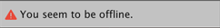

故障排除
This section provides information on the following issues:
- Error messages in the Packages window
- Package Manager missing or window doesn’t open
- Problems after upgrading Unity to new version
- Package installation fails
- Packages not recognized
- Loading error for hostfxr.dll on Windows
- Resetting your Project’s package configuration
- Authentication issues with Git URLs
Error messages in the Packages window
The Package Manager displays error indicators in the Packages window when it encounters problems:
- System-wide issues
Error messages that appear in the status bar indicate the Package Manager has detected an issue that is not related to a specific package. For example, if the Package Manager cannot access the package registry server, it displays this message in the status bar:

If your network cannot reach the package registry server, it is probably because there is a connection problem with the network. When you or your system administrator fix the network error, the status bar clears.
- Package-specific issues
If a specific package has a problem when loading or installing, the error icon ( ) appears in the package list next to the compromised package. To find out what the problem is, open the compromised package’s details view.
) appears in the package list next to the compromised package. To find out what the problem is, open the compromised package’s details view.
Package Manager missing or window doesn’t open
If your package.manifest file is malformed, an error similar to this appears in your Unity console:
Failed to resolve packages: The file [<project-path>/Packages/manifest.json] is not valid JSON:
Unexpected token '}' at 44:1
}
You can use the information contained in the error message to fix the JSON. There are a number of online validators that you can use to try to correct the problem. Once you save the corrected file, Unity reloads the Packages window.
If your package.manifest file is missing the reference to the com.unity.package-manager-ui package, you might not see any error messages in the console, and your packages might appear in the Project view, but you can’t open the Packages window because the Package Manager menu item does not appear in the Window menu. You can either reset your Project’s package configuration or add the following to the dependencies list:
"com.unity.package-manager-ui": "2.1.1",
If the Packages window is still missing, then restart Unity.
If you are still experiencing problems, check to see if your Project manifest uses “exclude” as a package version. This is an obsolete value for the dependencies attribute. If you find any lines like these, remove the entire line. Package Manager only installs packages that are explicitly included as a dependency in your Project, so once you remove that entry, Package Manager ignores the package and doesn’t install it.
If the Package Manager still fails to load, follow the procedures under Packages not recognized and Resetting your Project’s package configuration.
Problems after upgrading Unity to new version
When you upgrade a Project to a newer Unity version, the Package Manager automatically updates incompatible packages to newer compatible versions. However, if your package doesn’t compile, the Package Manager displays error messages in the Console.
To correct these messages, read the error messages and fix any problems you can. For example, a package might be missing a dependency on another package or version. In that case, you can try and install the package yourself.
You can also try the following sequence of solutions until you find something that works:
- Back up and then delete the
Packagesfolder under your Project. - Back up and then delete the package sources in your Project’s
Packagesfolder, leaving only themanifest.jsonfile. Then try to reload the Project. - Create a new empty Project. If the Packages window loads successfully, replace the
Library/PackageCache/com.unity.package-manager-ui@<version>folder in the failing Project with the same folder from the newly created Project. - As a last resort, you can reset your Project to the default package configuration and add back packages one at a time until it works.
Package installation fails
If you are trying to install a new package from the registry and it is not working, it might be due to permission problems.
You must have full permissions on the cache folder:
- Windows:
C:\Users\yourname\AppData\Local\Unity\cache - MacOS:
~/Users/Library/Unity/cache on MacOS
It might be a problem with the network. Check your firewall and proxy settings.
Sometimes institutional environments, such as schools, government offices, or network-protected workplaces set up proxy servers to control traffic between the network and the Internet, and use their own server certificates which are not recognized by Unity or the Package Manager. Talk to your network administrator.
Packages not recognized
If you see a lot of compilation errors, this might indicate that Unity is not recognizing the packages in your existing Project. In this case, you might be missing a .NET component.
For Windows:
- Download and install Visual Studio 2017 version 15.9.0 or higher with the .NET Core cross-platform development workload selected under Other Toolsets.
- Download and install the .NET SDK v2.2.101 component.
For MacOS:
Download and install the .NET SDK v2.2.101 component.
Install any recommended updates in Visual Studio
Use homebrew to brew and install mono:
brew update
brew install mono # optional
brew upgrade mono
If necessary, delete the
Library/obj/tempfolder under your Project and restart Unity.If you are still experiencing difficulties, try rebooting your computer as well.
Loading error for hostfxr.dll on Windows
If the Console reports that the hostfxr.dll library was found, but Unity failed to load it from C:\<path_to_app>\hostfxr.dll, you can fix this error on Windows 7 or Windows Server 2008 R2 by installing both KB2999226 and KB2533623 patches.
Resetting your Project’s package configuration
If a Project has too many package issues, you can reset your Project back to the default package configuration for the Editor’s version of Unity. This operation resets all packages in your Project. This might not fix the source of the problem, but it can help you figure out what the problem is.
NOTE: You can’t undo resetting your package configuration, so make sure you back up the manifest.json file first or make sure your Project is under source control. You can also take extra precautions by cloning your Project and testing out the operation on the clone before proceeding.
To return to the default package configuration, select Reset Packages to defaults from the Help menu.
Resetting a clone of your Project
You can also test the return to the default packages before you perform the final change:
Clone your Project by copy-pasting your Project folder and renaming it so that it is easy to find (for example, if your Project is called
MyProjectthen you could use something likeclone_MyProject).Load your newly cloned Project.
-
From the Help menu, select Reset Packages to defaults.
Depending on the size of your Project, this might take a few minutes.
Check that it successfully reset the packages. If so, you can perform the operation safely on the original Project.
Authentication issues with Git URLs
If you are using the SSH protocol to install a package by Git URL, you might get an authentication error from Git, even if you are running an ssh-agent in the background and your PID environment variables are set properly.
While your script can successfully start the ssh-agent in the background, the exported environment variables are only available to the Bash shell running the script and to any child process it launches from that point on. This is because your script cannot change environment variables from parent processes, unrelated processes, or previously created child processes. And even if the script is located in .bashrc, it only gets executed in Bash shells.
When you launch Unity or the Unity Hub (both in Windows and macOS) by double-clicking the Unity icon or using the Hub, it is not running in a shell, so the script is not executed. This means that the Unity Editor process doesn’t have these variables set, so ultimately the Git process invoked by Unity doesn’t have them either.
To solve this issue, you can either:
- Open a Bash shell first (before opening the Hub) and manually launch the Unity Editor from that shell.
- If you are on Windows, you can use the setx command to permanently set the environment variables in the Windows registry before the Hub process starts. This solution works best if you can ensure that the script runs once on startup and that the Hub does not start with Windows. For example:
# Expose env variables to native windows
setx SSH_AGENT_PID "$SSH_AGENT_PID"
setx SSH_AUTH_SOCK "$SSH_AUTH_SOCK"
- 2019–04–11 Page published with editorial review